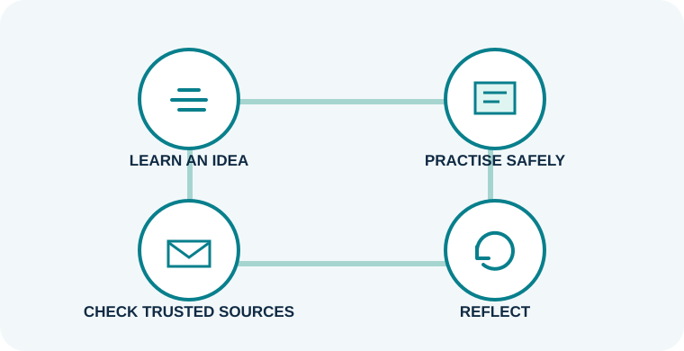

My independent learning reflection
While creating this website, I learned more about cybersecurity by researching different types of cyber threats and ways to protect against them. I learned about common threats such as phishing, malware, weak passwords, social engineering and data theft. I also learned that simple practices—using strong passwords, enabling two-factor authentication, keeping software updated and avoiding suspicious links—can help reduce cybersecurity risks (Cybersecurity and Infrastructure Security Agency [CISA], n.d.).
I learned how to find information from reliable sources and select useful material for my website instead of depending on only one source.
Why cybersecurity matters
I chose cybersecurity because technology and the Internet are now part of our daily lives. People use online platforms for communication, shopping, banking, studying and storing personal information. These activities can create opportunities for cybercriminals to steal information or attack devices and systems.
Learning about cybersecurity can help people recognise common online threats and make safer decisions when using technology. Cybersecurity is also important for organisations because security incidents can affect their data, systems, customers and daily operations. NIST's Cybersecurity Framework provides guidance to help organisations understand and manage cybersecurity risks (National Institute of Standards and Technology [NIST], 2024).
What I learned and the skills I gained
During this project, I gained cybersecurity knowledge and technical skills. I learned more about common cyber threats and basic ways to protect against them. I also improved my ability to research information, evaluate online sources, organise information and present a technical topic in a simple way.
Creating the website helped me improve my basic web development skills, including organising webpage content and using HTML and CSS. This project also taught me how to learn independently when I do not fully understand a topic at the beginning.
What I want to learn next
I would like to improve my programming and web development skills, especially HTML, CSS, JavaScript and Python. For cybersecurity, I would like to learn more about network security, ethical hacking, Linux, cryptography, malware analysis and penetration testing. I also want to understand how security tools work instead of learning cybersecurity concepts only in theory.
For this assignment, I will follow the lecturer's requirement to build the website using HTML and external CSS only. I can study JavaScript and Python separately as future skills.
My reflection
This project showed me that independent learning requires patience, research and practice. At the beginning, I did not know much about cybersecurity, so I had to search for information and understand the topic by myself. I also realised that cybersecurity is a broad field and that there is always something new to learn. Although I still have a lot to improve, this project gave me a better understanding of cybersecurity and encouraged me to continue learning in the future.

Five credible resources for the next step
01 · PRACTICAL HABITS
CISA — Secure Our World
What you can learn: recognising phishing, strong passwords, MFA and software updates.
Why it is useful: it explains practical actions in plain language for individuals and organisations.
How it supports future learning: use the habits as a checklist, then explore the linked tip sheets for one topic at a time.
02 · ORGANISATIONAL FRAMEWORK
NIST — Cybersecurity Framework 2.0
What you can learn: a flexible structure for organising cybersecurity risk management, including six core functions.
Why it is useful: it connects technical protection to governance, risk and business goals.
How it supports future learning: use its quick-start guides and examples to learn how organisations plan and communicate security work.
03 · BEGINNER COURSES
Cisco Networking Academy
What you can learn: introductory cybersecurity, networking and career-path topics through online courses.
Why it is useful: the catalog includes beginner material and practice-oriented learning.
How it supports future learning: start with introductory cybersecurity, then build networking foundations before pursuing an entry-level pathway.
04 · GUIDED PRACTICE
IBM SkillsBuild
What you can learn: introductory digital skills and cybersecurity subjects through a structured learning catalog.
Why it is useful: courses are grouped by level and topic, helping a beginner choose a manageable next lesson.
How it supports future learning: follow a short course, record key terms and revisit a practical topic that needs more study.
05 · CERTIFICATION STUDY
ISC2 — CC Self-Study Resources
What you can learn: core beginner domains such as security principles, access management, network and cloud security, and security operations.
Why it is useful: the certification organisation provides an exam outline, flashcards and study guidance aligned to its credential.
How it supports future learning: use the outline as a map of topics to study and a way to identify areas for additional practice.
A simple four-week learning plan
| Week | Focus | Small activity | Evidence of learning |
|---|---|---|---|
| 1 | Accounts and phishing | Study CISA tips; check MFA settings on your own accounts. | Write five warning signs of a suspicious message. |
| 2 | Networks and devices | Take a beginner course module. | Draw how a device connects to a service. |
| 3 | Risk and response | Read NIST's CSF overview. | Explain the six functions in your own words. |
| 4 | Career exploration | Compare entry-level job descriptions and one credential outline. | List two skills to practise next. |
Study safely and ethically: practise only on your own devices or in environments where you have clear permission.